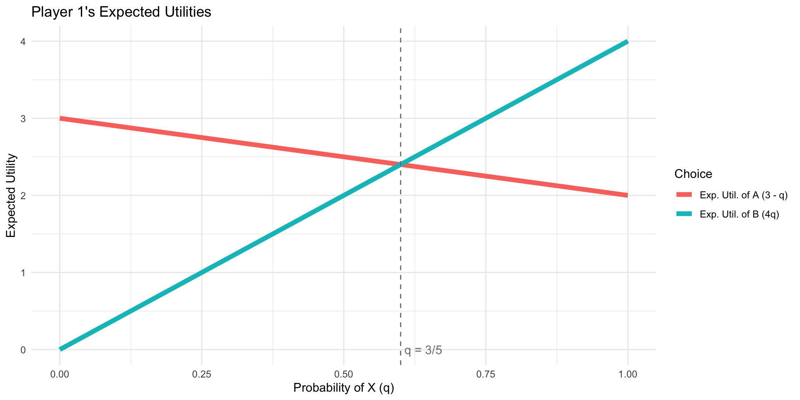
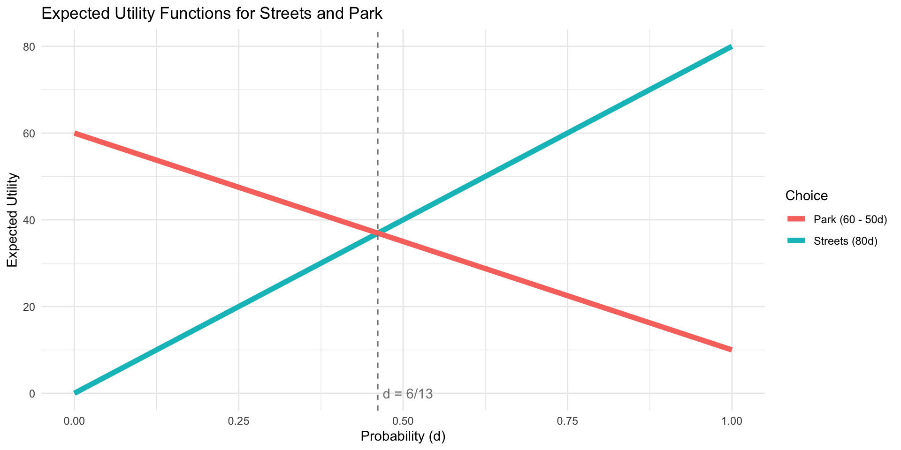
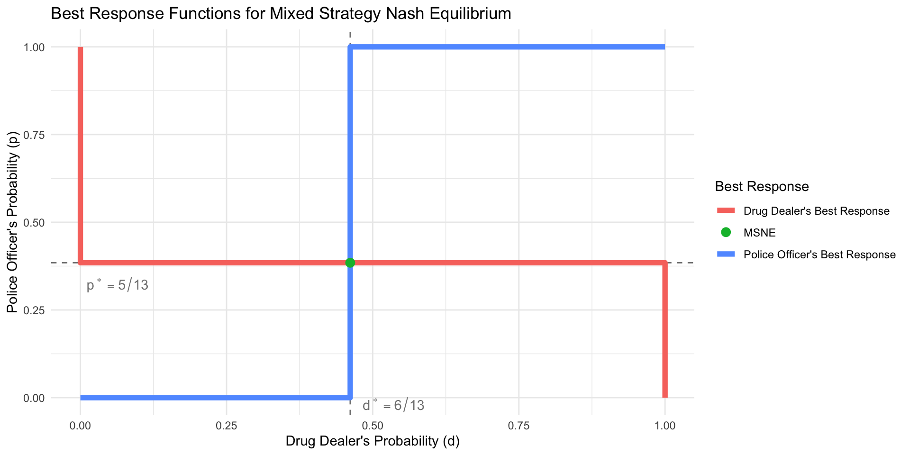

Introduction to Game Theory
Mixed Strategies and Strategic Uncertainty
Dante Yasui
2024
Outline
Mixed Strategies in Penalty Kicks
Why might mixed strategies be useful in analyzing behavior of kickers and goalies in penalty shootouts?
- reaction times \(\rightarrow\) essentially simultaneous game
- zero-sum game with incentive to keep the other player guessing
- modelling observed strategies chosen as random variables
- specific empirical statistics can be compared to their theoretical values
2x2 Penalty Kick Game
Simplest form of this game,
(prob of making goal is either 0% or 100%)
| Kicker, Goalie | \(Left_g\) | \(Right_g\) |
|---|---|---|
| \(Left_k\) | 0.3, 0.7 | 0.9, 0.1 |
| \(Right_k\) | 0.9, 0.1 | 0.3, 0.7 |
What should the Kicker do?
- Purely Left means goalie could block by always going Left 1
- Purely Right means goalie could block by always going Right
- So a rational strategy must be a random mix between both pure strategies
2x2 Penalty Kick Game
If the Kicker is going to mix, a good place to strat might be 50% Left, 50% Right
| Kicker, Goalie | \(Left_g\) | \(Right_g\) |
|---|---|---|
| \(Left_k\) | 0.3, 0.7 | 0.9, 0.1 |
| \(Right_k\) | 0.9, 0.1 | 0.3, 0.7 |
Does this work?
Goalie’s expected utility of \(Left_g\)
- \(= 0.7(0.5) + 0.1(0.5)\)
- \(= 0.35 + 0.05\)
- \(= 0.4\)
Goalie’s expected utility of \(Right_g\)
- \(= 0.1(0.5) + 0.7(0.5)\)
- \(= 0.05 + 0.35\)
- \(= 0.4\)
- So the 50:50 mix makes the goalie indifferent between \(Left_g\) and \(Right_g\)
2x2 Penalty Kick Game
Opponent Indifference Property
Goalie’s expected utility of each strategy depends on the degree to which Kicker plays \(Left_k\) vs \(Right_k\):
| Kicker, Goalie | \(Left_g\) | \(Right_g\) |
|---|---|---|
| \(Left_k\) | 0.3, 0.7 | 0.9, 0.1 |
| \(Right_k\) | 0.9, 0.1 | 0.3, 0.7 |
When should the Goalie choose \(Left_g\)?
- When \(EU_g(Left_g) \geq EU_g(Right_g)\)
- \(\Rightarrow 0.1 + 0.6p \geq 0.7 - 0.6p\)
- \(\Rightarrow 1.2p \geq 0.6\)
- \(\Rightarrow p \geq \frac{1}{2}\)
2x2 Penalty Kick Game
Opponent Indifference Property
| Kicker, Goalie | \(Left_g\) | \(Right_g\) |
|---|---|---|
| \(Left_k~(p)\) | 0.3, 0.7 | 0.9, 0.1 |
| \(Right_k~(1-p)\) | 0.9, 0.1 | 0.3, 0.7 |
When should the Goalie choose \(Left_g\)?
- If \(p>\frac{1}{2}\), then it’s always better to \(Left_g\)
- If \(p<\frac{1}{2}\), then it’s always better to \(Right_g\)
- In either case, the Goalie could exploit knowledge1 of \(p\)
- If \(p=\frac{1}{2}\), then either one is rational
The Goalie’s indifference means there’s no opportunity to expliot
2x2 Penalty Kick Game
| Kicker, Goalie | \(Left_g\) | \(Right_g\) |
|---|---|---|
| \(Left_k\) | 0.3, 0.7 | 0.9, 0.1 |
| \(Right_k\) | 0.9, 0.1 | 0.3, 0.7 |
So what should the Kicker do?
- Set \(p\) equal to exactly 1/2
- Anything else would result in a lower payoff:
- \(EU_k(p < \frac{1}{2} | Left_g) = 0.3p + 0.9(1-p) = 0.9 - 0.6p\)
- \(EU_k(p > \frac{1}{2} | Right_g) = 0.9p + 0.3(1-p) = 0.3 + 0.6p\)
- \(EU_k(p = \frac{1}{2}) = 0.6\)
2x2 Penalty Kick Game
| Kicker, Goalie | \(Left_g\) | \(Right_g\) |
|---|---|---|
| \(Left_k\) | 0.3, 0.7 | 0.9, 0.1 |
| \(Right_k\) | 0.9, 0.1 | 0.3, 0.7 |
- So the Kicker should play \(Left_k\) 50% of the time, \(Right_k\) 50%
- the Goalie should play \(Left_g\) 50% of the time, \(Right_g\) 50%
- In this mixed-strategy Nash equilibrium, both players are indifferent between either of their pure strategies
- The kicker’s probability of scoring is 0.6 no matter what direction they choose
Thinking about Randomness
“I, at any rate, am convinced that [God] does not throw dice”
- Albert Einstein 1
Thinking about Randomness
“Rational decision makers are able to give reasons for each action they take; outside Las Vegas players do not spin roulette wheels”
- Ariel Rubenstein 1
Thinking about Randomness
Why should we use mixed strategies?!
As we saw in Activity 2, rarely do real life data fit in completely deterministic models
You can interpret the mixed strategy of one player as the beliefs of other players in equilibrium
Learning some basics of probability theory will help you outside of this class
Lotteries
In this class, any choices with uncertain payoffs will be called lotteries.
A lottery doesn’t have to only be about money
For any set of outcomes in a lottery, there will be an associated probability: if \(a\) is a possible outcome, then \(P(a)\) is the probability that it occurs.
- All probabilities must be between 0 and 1: \(0 \leq P(a) \leq 1\) for all possibilities \(a\).
- Additionally, the probabilities given in a particular lottery must sum to exactly 1: we will assume that one, and exactly one, outcome must actually occur.
Expected Utility
How can you know how much you like a given lottery if you don’t even know what the outcome will be?
A natural way would be to think of how happy it would make you on average.
The economists’ term for this idea is expected utility or expected payoffs.
Expected Payoffs
- You calculate an average by adding up the values of a lottery times the probability of how likely each is.
\[U(a) = \mathbb{E}[u(a)] = \sum_{a}u(a)P(a)\]
- This is a weighted average of the payoffs associated with each outcome \(a\), with the weights being the probabilities of each one happening.
Double or Nothing ‘game’

Expected Payoff Examples
Zoidberg’s expected payout if he Lets it Ride is \(0.50(\$10) + 0.50(\$0) = \$5 - \$0 = \$5\).
Let’s face it, Zoidberg always has luck stacked against him, so suppose instead the coin has a 75% probability of tails,
The expected payoff would then be \[0.25(\$10) + 0.75(\$0) = \$2.50 + \$0 = \$2.50 \].
Cardinal Payoffs
- Using expected payoffs implies that the payoffs of the outcomes are cardinal, not merely ordinal: this means that the payoffs can be used not just to rank, but to compare the relative “goodness” of outcomes.
- i.e. an outcome with payoff 2 is actually twice as good as an outcome with payoff 1.
Von-Neumann Morgenstern Utility
There are a few other axioms beyond just completeness and transitivity which are needed when it comes to making rational choices over lotteries.
Continuity: Small changes in lottery probabilities shouldn’t make your ranking jump around.
Independence: If you know which of two lotteries you prefer, when I add a little bit of another unrelated option into both, it shouldn’t change your mind.
Because expected utility requires special assumptions beyond those of regular utility, it gets it’s own special name:
Von-Neumann Morgenstern utility function
Types of Uncertainty
There are two main types of uncertainty that we’ll cover in this course: external and internal.
- External uncertainty results from factors outside of the game that the players don’t control, such as weather or other random events.
- Internal uncertainty result from players’ own actions inside of the game: it is caused whenever a player acts in a random way.
External Uncertainty: States of Nature
- The simplest form of uncertainty that we’ll discuss is simple uncertainty or uncertainty about the state of nature.
- Players don’t know which state of nature will occur — but we assume that they do know the probability associated with each state.
Example: A Card Game
There are two players, Doc and Wyatt. Both are dealt a hand of cards: there is a 50% probability that Wyatt’s hand is better, and a 50% probability that Doc’s is. There are no ties.
- At the beginning of the game, both players must bet $1.
- After seeing his cards, Doc may either Stay, keeping the $1 bet, or may Raise, bringing his bet to $2.
- Doc simultaneously decides to either Match Doc’s bet, whatever that may be, or to Quit and forfeit his $1.
- If Wyatt Matches, the player with the better hand wins all the money. If Wyatt Quits, Doc wins all the money by default.
Game Table: Doc’s Hand is Better
In the state of nature where Doc has the better hand, this is the game table:
| Doc, Wyatt | \(Match\) | \(Quit\) |
|---|---|---|
| \(Stay\) | \(1, -1\) | \(1, -1\) |
| \(Raise\) | \(2, -2\) | \(1,-1\) |
Game Table: Wyatt’s Hand is Better
On the other hand, if Wyatt has the better hand, this is the game table:
| Doc, Wyatt | \(Match\) | \(Quit\) |
|---|---|---|
| \(Stay\) | \(-1, 1\) | \(1, -1\) |
| \(Raise\) | \(-2, 2\) | \(1,-1\) |
Payoffs as Lotteries
We could solve each of these game tables separately but neither player knows which state really applies.
- Instead, to solve this game, we must approach the payoffs as lotteries:
- Doc’s payoff from (\(Stay,~Match\)): gains 1 with probability 0.5, and loses 1 with probability 0.5.
- Wyatt’s payoff from (\(Stay,~Match\)): loses 1 with probability 0.5, and gains 1 with probability 0.5.
- the expected payoffs of these lotteries are both 0.
Game Table: Expected Payoffs
| Doc, Wyatt | \(Match\) | \(Quit\) |
|---|---|---|
| \(Stay\) | 0, 0 | 1, -1 |
| \(Raise\) | 0, 0 | 1,-1 |
- The Nash equilibria under uncertainty are (\(Stay,~Match\)) and (\(Raise,~Match\)).
Variation: Unknown Probabilities
Suppose that the probability Doc has the better hand is \(p\).
- How large does \(p\) have to be before there is a Nash equilibrium where Wyatt Quits?
We can find the expected payoffs in terms of p:
- (Stay, Match):
- Doc’s Expected Payoff:
- \(1p - 1(1-p) = 2p - 1\)
- Wyatt’s Expected Payoff:
- \(-1p + 1(1-p) = -2p + 1\)
- Doc’s Expected Payoff:
Variation: Unknown Probabilities
(Raise, Match):
- Doc’s Expected Payoff:
- \(2p - 2(1-p) = 4p -2\)
- Wyatt’s Expected Payoff:
- \(-2p + 2(1-p) = -4p + 2\)
(Stay, Quit) and (Raise, Quit):
- Doc’s Expected Payoff:
- \(1p + 1(1-p) = 1\)
- Wyatt’s Expected Payoff:
- \(-1p -1(1-p) = -1\)
Variation: Unknown Probabilities
| Doc, Wyatt | \(Match\) | \(Quit\) |
|---|---|---|
| \(Stay\) | \(2p - 1, -2p + 1\) | \(1, -1\) |
| \(Raise\) | \(4p - 2, -4p + 2\) | \(1,-1\) |
If Wyatt Quits, Doc doesn’t care whether he Stays or Raises
To have a NE where Wyatt Quits, we just need Wyatt to be happy with Quitting.
- (\(Stay,~Quit\)) is a NE if \(-1 \geq -2p + 1\), i.e. if \(p \geq 1\).
- (\(Raise,~Quit\)) is a NE if \(-1 \geq -4p + 2\), i.e. if \(p \geq \frac{3}{4}\).
- One interpretation of this is that it is only rational for Wyatt to Quit if he is very confident that Doc has the better hand.
Internal Uncertainty
Now that we discussed external uncertainty over states of nature, let’s talk about internal uncertainty
Internal uncertainty occurs when one or more players pick their strategies randomly.
Picking a strategy at random is really just a different kind of strategy, called a mixed strategy.
Mixed Strategies
When a player always does the same thing, it’s called a pure strategy
A mixed strategy assigns a probability to each of a player’s pure strategies.
- Like a lottery, the probabilities in a mixed strategy must all be between 0 and 1,
- and must sum to exactly 1.
Mixed Strategies
- A mixed strategy can assign 0 probability to a pure strategy.
- It can even assign probability 1 to a single pure strategy, and probability 0 to all others
- this is still, technically, a mixed strategy, but it is a trivial one.
- When a player uses a mixed strategy, it turns the other player’s payoffs into lotteries.
Mixed Strategies in the Deer Hunt
Consider the Deer Hunt:
| Igg, Ogg | Deer | Rabbit |
|---|---|---|
| Deer | \(2, 2\) | \(0, 1\) |
| Rabbit | \(1, 0\) | \(1, 1\) |
Suppose that Igg hunts Deer 3/4 of the time, and Rabbit 1/4 of the time.
- If Ogg always hunts deer; what is Ogg’s expected payoff?
- Ogg’s expected payoff from playing Deer will be \(0.75(2) + 0.25(0) = 1.5\).
Mixed Strategies in the Deer Hunt: Generalizing
We can generalize this approach to calculate Ogg’s expected payoffs from any strategy that Igg chooses to play:
- Suppose that Igg plays Deer with probability p, and Rabbit with probability 1 - p.
- Then Ogg’s expected payoff from Deer is:
- \(2(p) + 0(1 - p) = 2p\), and from Rabbit, it is \(1(p) + 1(1 - p) = 1\).
- Note that Ogg’s expected payoff from Deer gets larger with p: the more likely Igg is to hunt Deer, the more attractive an option it becomes for Ogg.
When to Play a Mixed Strategy?
It’s possible for a mixed strategy to be a best response to the other player’s strategy:
- if and only if all of the mixed strategy’s components (pure strategies that are assigned positive probability) are best responses too.
- Some intuition: If a strategy is not a best response, you should not play it—even as part of a mixed strategy.
When to play a Mixed Strategy?
If a player only has two pure strategies, it becomes simple to tell when a mixed strategy is a best response: the mixed strategy must be a mixture of those two pure strategies, and the only way that both of them are best responses is if they have equal expected payoffs.
- Taking the Deer Hunt as an example, the only way that it can be a best response for Ogg to play a mixed strategy is if Deer and Rabbit provide Ogg with equal expected payoffs: we must have \(2p = 1\), or \(p = \frac{1}{2}\).
What Mixed Strategy to Play
- However, if any mixed strategy is a best response, then all mixed strategies (with the same components) are also best responses.
- Intuitively, if the pure strategies going into a mixed strategy are just as good as each other, then it doesn’t matter what proportions you mix them in.
- This means that, while it’s easy to solve for when it’s rational for a player to use a mixed strategy, there’s no way to solve for a particular mixed strategy that the player should play.
Mixed-Strategy Nash Equilibrium
To solve for the Nash equilibria where players are allowed to use mixed strategies: we need to look for the conditions under which a player would be willing to use a mixed strategy.
- This means that we’re going to use one player’s expected payoffs to solve for the other player’s mixed strategy
MSNE in the Deer Hunt
Let’s say that Igg plays Deer with probability \(p\) and Rabbit with probability \(1 - p\)
While Ogg plays Deer with probability \(q\) and Rabbit with probability \(1 - q\).
- This is simply a framework for describing each player’s mixed strategies: we’re using placeholder variables for the players’ mixed strategy probabilities
MSNE in the Deer Hunt
We already saw that Ogg’s expected payoffs from Deer and Rabbit are \(2p\) and \(1\), respectively,
so Ogg would only play a mixed strategy if \(p = \frac{1}{2}\).
- Likewise, Igg’s expected payoffs are \(2q\) and \(1\), and Igg will play a mixed strategy if \(q = \frac{1}{2}\).
- The MSNE in this game can be written as: \[ \{(1/2~Deer, 1/2~Rabbit)_{Ogg}, \ (1/2~Deer, 1/2~Rabbit)_{Igg}\}\].
Error-Checking
Make sure that you’re setting up the equations used to solve for a player’s strategy correctly:
- Describe when a player is indifferent between their pure strategies:
- if you’re trying to figure out when Player 1 is indifferent, you need to use Player 1’s payoffs.
- However, the probabilities will be based on the other player’s mixed strategy:
- in a game with mixed strategies, the randomness a player deals with is created by the other player—not themselves.
Another Example: Police Patrol and Drug Trade
| Police, Dealer | Streets (d) | Park (1 - d) |
|---|---|---|
| Streets (p) | 80, 20 | 0,100 |
| Park (1 - p) | 10, 90 | 60,40 |
1
- Police Officer’s expected utility:
- \(U_P(Streets) = 80d + 0(1-d)\)
- \(= 80d\)
- \(U_P(Park) = 10d + 60(1-d)\)
- \(= 60 - 50d\).
- \(U_P(Streets) = 80d + 0(1-d)\)
- Drug Dealer’s expected utility:
- \(U_D(Streets) = 20p + 90(1-p)\)
- \(= 90 - 70p\)
- \(U_D(Park) = 100p + 40(1-p)\)
- \(= 40 + 60p\).
- \(U_D(Streets) = 20p + 90(1-p)\)
MSNE in Patrol and Trade game:
When is the Police Officer indifferent between going to the Park and going to the Streets?
When is the Drug Dealer indifferent between going to the Park and going to the Streets?
- What is the Mixed Strategies Nash equilibrium?
Graph Police Officer’s expected utilities
Graph Drug Dealer’s expected utilities

Graph Best Response functions
MSNE in Patrol and Trade game:
Note that the players’ asymmetric preferences result in an interior solution.
Notice that it isn’t a 50:50, it is more likely that both meet in the Park than it is likely that they both meet in the Streets
Practice your understanding
Consider the following game table. What are Player 1’s expected payoffs, given Player 2’s mixed strategy?
| \(P_1\), \(P_2\) | Up \((q)\) | Down \((1 - q)\) |
|---|---|---|
| Up \((p)\) | 2, -2 | -3, 3 |
| Down \((1 - p)\) | -5, 5 | 1, -1 |
- \(U_1(Up) = 2q -3(1-q) = 5q - 3\),
- \(U_1(Down) = -5q + 1(1-q) = -6q +1\)
Practice your understanding
Consider the following game table. What are Player 2’s expected payoffs, given Player 1’s mixed strategy?
| \(P_1\), \(P_2\) | Up \((q)\) | Down \((1 - q)\) |
|---|---|---|
| Up \((p)\) | 2, -2 | -3, 3 |
| Down \((1 - p)\) | -5, 5 | 1, -1 |
- \(U_2(Up) = -2p + 5(1-p) = -7p + 5\),
- \(U_2(Down) = 3p - 1(1-p) = 4p -1\)
Practice your understanding
The correct answers to the previous two questions were:
- \(U_1(Up) = 5q - 3\)
- $U_1(Down) = -6q + 1 $.
- \(U_2(Up) = -7p + 5\)
- \(U_2(Down) = 4p - 1\).
Based on this, what are \(p\) and \(q\) in the MSNE of this game?
- \(p^* = 6/11\)
- \(q^* = 4/11\)
Multiple MSNE in one game
Consider the following game table:
| \(P_1\), \(P_2\) | \(X~(q)\) | \(Y~(1 - q)\) |
|---|---|---|
| \(A~(p)\) | 2, 2 | 3, 2 |
| \(B~(1 - p)\) | 4, 3 | 0, 0 |
The players’ expected payoffs are:
\[ \begin{align*} U_1(A) & = 2q + 3(1 - q) \\ & = 2q + 3 - 3q \\ & = 3 - q \\ U_1(B) & = 4q + 0(1 - q) \\ & = 4q \\ U_2(X) & = 2p + 3(1 - p) \\ & = 2p + 3 - 3p \\ & = 3 - p \\ U_2(Y) & = 2p + 0(1 - p) \\ & = 2p \end{align*} \]
Multiple MSNE in one game
Based on this, the conditions under which each player will use a mixed strategy are:
\[ \begin{align*} Player~1: && Player~2:&\\ 3 - q &= 4q & 3 - p &= 2p\\ 3 &= 5q & 3 &= 3p\\ q &= 3/5 & p &= 1 \end{align*} \]
- We’ve never seen anything like \(p = 1\) in this context before…
- Player 2 will only mix if Player 1 only plays A
- This usually occurs when one strategy weakly dominates another.
Multiple MSNE in one game
Multiple MSNE in one game
We can still approach this the same way that we have in the past:
| \(P_1\), \(P_2\) | \(X~(q)\) | \(Y~(1 - q)\) |
|---|---|---|
| \(A~(p)\) | 2, 2 | 3, 2 |
| \(B~(1 - p)\) | 4, 3 | 0, 0 |
- Suppose in MSNE that Player 1 plays a (non-trivial) mixed strategy.
- Then Player 2 must also play a mixed strategy, in which q = 3/5.
- But Player 2 will only mix if Player 1 plays p = 1, which is a trivial mixed strategy.
- This is a contradiction, there is no MSNE where Player 1 plays a non-trivial mixed strategy
Multiple MSNE in one game
Approach it the other way next:
| \(P_1\), \(P_2\) | \(X~(q)\) | \(Y~(1 - q)\) |
|---|---|---|
| \(A~(p)\) | 2, 2 | 3, 2 |
| \(B~(1 - p)\) | 4, 3 | 0, 0 |
Suppose Player 2 plays a non-trivial mixed strategy.
- Then Player 1 must play A as a pure strategy.
- Player 2 will play A if \(3 - q \geq 4q\), i.e. if \(3/5 \geq q\).
- This lets Player 2 play a non-trivial mixed strategy! There is no contradiction here.
Multiple MSNE in one game
- There are a range of MSNEs here: all strategy profiles \((1, 0), (q, 1 - q)\), in which \(q \in (0, 3/5]\)
- There are also two trivial MSNEs, \((1, 0), (0, 1)\) and \((0, 1), (1, 0)\), which are really just the pure-strategy Nash equilibria (A, Y) and (B, X) expressed in the form of an MSNE.
- It will help to understand what’s going on with the Best Responses graph:
Multiple MSNE in one game

Absence of MSNEs
Let us return to the Prisoner’s Dilemma and check for MSNEs:
| Guido, Luca | \(Testify~(q)\) | \(Keep~Quiet~(1-q)\) |
|---|---|---|
| \(Testify~(p)\) | \(-10,-10\) | \(0,-20\) |
| \(Keep~Quiet~(1-p)\) | \(-20,0\) | \(-1,-1\) |
Guido and Luca’s expected payoffs are:
- \(U_G(Testify) = -10q + 0(1 - q) = -10q\).
- \(U_G(Keep Quiet) = -20q + (-1)(1 - q) = -1 - 19q\).
- \(U_L(Testify) = -10p + 0(1 - p) = -10p\).
- \(U_L(Keep Quiet) = -20p + (-1)(1 - p) = -1 - 19p\).
Absence of MSNEs
Guido will play a mixed strategy if:
\[ \begin{align*} -10q &= -1 - 19q\\ 9q &= -1\\ q &= -1/9 \end{align*} \]
- But -1/9 is not a valid probability!
- We could also note that if \(q\in [0, 1]\):
- \(-10q\) is always greater than \(-1 - 19q\).
- In other words, as we saw weeks ago, \(Testify\) strictly dominates \(Keep~Quiet\)…so why would Guido mix between the two of them?
Getting Bad Probabilities
If you’ve solved for a player’s mixed strategy and you find that the probability is less than 0, or more than 1:
- It means something is wrong. Probability can only be between 0 and 1 (inclusive).
- Double-check your math—it could be an algebra error.
- But if you’re confident in your math, this means that there is no way that the player would ever play a mixed strategy:
- in fact, they have a strictly dominated strategy.
MSNE in a Larger Game
Suppose that we have this 3x2 game:
| \(P_1\), \(P_2\) | X (r) | Y (1 - r) |
|---|---|---|
| A (p) | 2, 1 | 0, 1 |
| B (q) | 1, 2 | 2, 0 |
| C (z) | 0, 0 | 3, 2 |
- Player 1’s mixed strategy uses probabilities p, q, and z, since they have three pure strategies.
MSNE in a Larger Game
| \(P_1\), \(P_2\) | X (r) | Y (1 - r) |
|---|---|---|
| A (p) | 2, 1 | 0, 1 |
| B (q) | 1, 2 | 2, 0 |
| C (z) | 0, 0 | 3, 2 |
Let’s put together Player 1’s expected payoffs:
- \(U_1(A) = 2r + 0 = 2r\).
- \(U_1(B) = 1r + 2(1 - r) = 2 - r\).
- \(U_1(C) = 0 + 3(1 - r) = 3 - 3r\).
MSNE in a Larger Game
| \(P_1\), \(P_2\) | X (r) | Y (1 - r) |
|---|---|---|
| A (p) | 2, 1 | 0, 1 |
| B (q) | 1, 2 | 2, 0 |
| C (z) | 0, 0 | 3, 2 |
Next, let’s see what it would take to get Player 1 to mix different pairs of strategies:
- A and B: \(2r = 2 - r \implies r = \frac{2}{3}\).
- A and C: \(2r = 3 - 3r \implies r = \frac{3}{5}\).
- B and C: \(2 - r = 3 - 3r \implies r = \frac{1}{2}\).
Note that each pair of strategies requires a different value of \(r\): there is no mixed strategy for Player 2 that would make Player 1 willing to mix all three of their pure strategies.
MSNE in a Larger Game
| \(P_1\), \(P_2\) | X (r) | Y (1 - r) |
|---|---|---|
| A (p) | 2, 1 | 0, 1 |
| B (q) | 1, 2 | 2, 0 |
| C (z) | 0, 0 | 3, 2 |
Let’s check Player 2’s expected payoffs next:
- \(U_2(X) = 1p + 2q + 0\).
- \(U_2(Y) = 1p + 0 + 2(z)\).
- So Player 2 will play a mixed strategy if \(p + 2q = p + 2(z) \implies q = z\).
- There are two ways that this can be true: Either Player 1 plays B and C with equal probability (and we know from earlier that they would only be playing these two, not A), or Player 1 plays A only, and B and C not at all.
MSNE in a Larger Game
So, one type of MSNE is where Player 1 only plays A:
this requires \(2r \geq 2 - r\) and \(2r \geq 3 - 3r \Rightarrow r \geq \frac{2}{3}\) and \(r \geq \frac{3}{5}\).
- MSNE: \((1, 0, 0), (r, 1 - r)\), where \(r \geq \frac{2}{3}\).
- And the other type of MSNE is where Player 1 plays B and C with equal (1/2) probability, and Player 2 plays X and Y with equal (1/2) probability.
- MSNE: \((0, 1/2, 1/2), (1/2, 1/2)\)
Graph Player 1’s expected utilities

- If \(q<z\) then \(BR_2 = \{X\}\)
- If \(q>z\) then \(BR_2 = \{Y\}\)
- If \(q=z\) then \(BR_2 = \{X,Y,(r)\}\)
When will Player 1 mix?
What it would take to get Player 1 to mix different pairs of strategies:
- A and B: \(2r = 2 - r \implies r = \frac{2}{3}\).
- A and C: \(2r = 3 - 3r \implies r = \frac{3}{5}\).
- B and C: \(2 - r = 3 - 3r \implies r = \frac{1}{2}\).
- Note that there is no intersection between all three lines simultaneously
- This means that Player 1 will never mix between all three strategies
MSNE in a Larger Game
Let’s check Player 2’s expected payoffs next:
\(U_2(X) = 1p + 2q + 0\).
\(U_2(Y) = 1p + 0 + 2(z)\).
So Player 2 will play a mixed strategy if \[p + 2q = p + 2(z)\] \[\implies q = z\].
Recall that \(q\) was the probability we put on Player 2 playing \(B\),
and \(z\) was the probability they play \(C\).
visualizing Player 2’s Best Responses

When will Player 2 mix?
We found they are indifferent between \(X\) and \(Y\) when \[ q = z \].
There are two ways that this can be true:
- Either Player 1 plays B and C with equal probability (and we know from earlier that they would only be playing these two, not A),
- or Player 1 plays A only, and B and C not at all.
MSNE in a Larger Game
Case 1: Player 1 only plays A:
- this requires \(2r \geq 2 - r\) and \(2r \geq 3 - 3r\),
- which imply that \(r \geq \frac{2}{3}\) and \(r \geq \frac{3}{5}\).
- MSNE 1:
- \(\sigma_1 = (p = 1, q = 0, z = 0),\)
- \(\sigma_2 = (r, 1 - r)\) where \(r \geq \frac{2}{3}\).
MSNE in a Larger Game
Case 2: Player 1 plays \(B\) and \(C\) with equal probability
- then Player 2 plays X and Y with equal (1/2) probability.
- MSNE: \(\sigma_1 = (p = 0, q = 1/2, z = 1/2), \sigma_2 = (1/2, 1/2)\)
Solving MSNE in a 3x3 Game
| \(P_1\), \(P_2\) | Left | Center | Right |
|---|---|---|---|
| Top | 2, 1 | 3, 0 | 3, 0 |
| Middle | 3, 0 | 0, 1 | 3, 0 |
| Bottom | 3, 0 | 3, 0 | 2, 1 |
Any pure strategy NE?
Solving for 3-strategy MSNE
Step 1: Define Mixed Strategies
Player 1’s mixed strategy: Let \(\sigma_1 = (t, m, b)\)
Player 2’s mixed strategy: Let \(\sigma_2 = (\ell, c, r)\)
Note that the lowercase letters represent the probabilities played on the uppercase pure strategies.
Solving for 3-strategy MSNE
Step 2: Solve for Expected Utilities
- Player 1:
- \(EU_1(T, \sigma_2) = 2\ell + 3c + 3r\)
- \(EU_1(M, \sigma_2) = 3\ell + 3r\)
- \(EU_1(B, \sigma_2) = 3\ell + 3c + 2r\)
- Player 2:
- \(EU_2(L, \sigma_1) = t\)
- \(EU_2(C, \sigma_1) = m\)
- \(EU_2(R, \sigma_1) = b\)
Solving for 3-strategy MSNE
Step 3: Find Indifference Conditions
When will Player 1 mix between 2 pure strategies?
When does \(EU_1(Top, \sigma_2) \geq EU_1(Middle, \sigma_2)\):
\[ \begin{align} 2\ell + 3c + 3r & \geq 3\ell + 3r \\ \Rightarrow 3c & \geq \ell \end{align} \]
When does \(EU_1(Top, \sigma_2) \geq EU_1(Bottom, \sigma_2)\):
\[ \begin{align} 2\ell + 3c + 3r & \geq 3\ell + 3c + 2r \\ \Rightarrow r & \geq \ell \end{align} \]
When does \(EU_1(Middle, \sigma_2) \geq EU_1(Bottom, \sigma_2)\):
\[ \begin{align} 3\ell + 3r & \geq 3\ell + 3c + 2r \\ \Rightarrow r & \geq 3c \end{align} \]
Solving for 3-strategy MSNE
Step 3: Find Indifference Conditions
When will Player 2 mix between 2 pure strategies?
- When does \(EU_2(Left, \sigma_1) \geq EU_2(Center, \sigma_1)\): \[ t \geq m \]
- When does \(EU_2(Left, \sigma_1) = EU_2(Right, \sigma_1)\): \[ t \geq b \]
- When does \(EU_2(Center, \sigma_1) = EU_2(Right, \sigma_1)\): \[ m \geq b \]
Solving for 3-strategy MSNE
Step 4: Check Cases for possible Nash Equilibria:
| \(P_1\), \(P_2\) | Left | Center | Right |
|---|---|---|---|
| Top | 2, 1 | 3, 0 | 3, 0 |
| Middle | 3, 0 | 0, 1 | 3, 0 |
| Bottom | 3, 0 | 3, 0 | 2, 1 |
Any cases where either player plays only one pure strategy?
- No! We already checked for PSNE in the table
Solving for 3-strategy MSNE
Step 4: Check Cases for possible Nash Equilibria:
Case 1: Player 2 mixes between Left and Center
Then we know that \(EU_2(\text{Left}) = EU_2(\text{Center}) > EU_2(R)\)
\[ \Rightarrow t = m > b\]
- If \(\ell > 3/4\) then \(BR_1 = \{\text{Middle}\} \Rightarrow m = 1\)
- contradiction: \(m\) can’t be equal to \(t\) and also sum to 1
- If \(\ell < 3/4\) then \(BR_1 = \{\text{Top}\} \Rightarrow t = 1\)
- contradiction: \(t\) can’t be equal to \(m\) and also sum to 1
- If \(\ell = 3/4\) then \(BR_1 = (t, m, 0)\)
- No contradiction!
- So \(\{ \sigma_1 = (t = 1/2, m = 1/2, b = 0)\), \(\sigma_2 = (\ell = 3/4, c = 1/4, r = 0) \}\) is an MSNE
Solving for 3-strategy MSNE
Step 4: Check Cases for possible Nash Equilibria:
Case 2: Player 2 mixes between Left and Right
Then we know that \(EU_2(\text{Left}) = EU_2(\text{Right}) > EU_2(Center)\)
\[ \Rightarrow t = b > m\]
- If \(\ell > 1/2\) then \(BR_1 = \{\text{Bottom}\} \Rightarrow b = 1\)
- contradiction: \(b\) can’t be equal to \(t\) and also sum to 1
- If \(\ell < 1/2\) then \(BR_1 = \{\text{Top}\} \Rightarrow t = 1\)
- contradiction: \(t\) can’t be equal to \(b\) and also sum to 1
- If \(\ell = 1/2\) then \(BR_1 = (t, 0, b)\)
- No contradiction!
- So \(\{ \sigma_1 = (t = 1/2, m = 0, b = 1/2)\), \(\sigma_2 = (\ell = 1/2, c = 0, r = 1/2) \}\) is an MSNE
Solving for 3-strategy MSNE
Step 4: Check Cases for possible Nash Equilibria:
Case 3: Player 2 mixes between Center and Right
Then we know that \(EU_2(\text{Center}) = EU_2(\text{Right}) > EU_2(Left)\)
\[ \Rightarrow m = b > t\]
- If \(r > 3/4\) then \(BR_1 = \{\text{Middle}\} \Rightarrow m = 1\)
- contradiction: \(m\) can’t be equal to \(b\) and also sum to 1
- If \(r < 3/4\) then \(BR_1 = \{\text{Bottom}\} \Rightarrow b = 1\)
- contradiction: \(b\) can’t be equal to \(m\) and also sum to 1
- If \(r = 3/4\) then \(BR_1 = (0, m, b)\)
- No contradiction!
- So \(\{ \sigma_1 = (t = 0, m = 1/2, b = 1/2)\), \(\sigma_2 = (\ell = 0, c = 1/4, r = 3/4) \}\) is an MSNE
Solving for 3-strategy MSNE
Step 4: Check Cases for possible Nash Equilibria:
Case 4: Player 2 mixes between Left, Center, and Right
Then we know that \(EU_2(\text{Center}) = EU_2(\text{Right}) = EU_2(Left)\)
\[ \Rightarrow t = m = b\]
\[ \Rightarrow \ell = 3c = r\]
And because probabilities must sum to one:
\[ \begin{align} 3c + c + 3c & = 1 \\ \Rightarrow 7c & = 1 \\ c & = 1/7 \end{align} \]
\(\{ \sigma_1 = (t = 1/3, m = 1/3, b = 1/3),\) \(\sigma_2 = (\ell = 3/7, c = 1/7, r = 3/7) \}\) is an MSNE

EC327 | Lecture 6 | Mixed Strategies